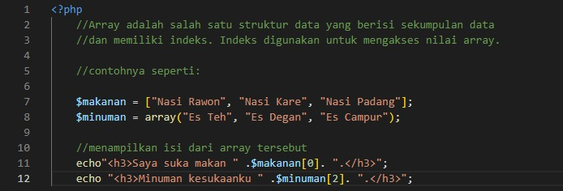

PHP Dasar 2
Kode program di atas menununjukkan implementasi penggunaan array pada bahasa pemrograman PHP. Dalam array dapat berisi kumpulan data yang ditandai dengan index yang dimulai dari index 0. Pada tipe data array dapat berisi berbagai tipe data seperti string maupun integer. Dalam implementasinya, array pada bahasa PHP dapat menggunakan syntax array() atau array dengan tanda []

Kode di atas merupakan output dari program bahasa PHP di atas yang dimana memanggil index ke 0 dari variable makanan, sehingga menghasilkan kalimat seperti di atas.
Fungsi if else digunakan pada saat kita ingin memeriksa sebuah kondisi. Pada contoh diatas kita memiliki sebuah variabel yaitu jumlah_uang dan isi dari variabel tersebut adalah 10000. Dengan kondisi if else maka kita akan memeriksa variabel jumlah_uang. Jika variabel jumlah_uang sama dengan 50000, maka output nya adalah anda harus menabung lagi… dan jika tidak, maka output nya adalah anda tidak mempunyai uang sama sekali. Apabila program tersebuut dijalankan, maka akan menghasilkan output di bawah ini :
Gambar di atas merupakan mhasil output dari kode program pengkondisian menggunakan if else.
For merupakan salah satu perulangan PHP. Untuk kondisi perulangan For, setidaknya kita membutuhkan 3 kondisi, yaitu kondisi awal perulangan, kondisi saat perulangan, dan kondisi yang harus dipenuhi agar perulangan berhenti. Pada contoh diatas, $i = 1 sebagai kondisi awal dari perulangan tersebut yang berarti nilai awal untuk variabel $i adalah 1. $i <= 5 sebagai kondisi akhir, jadi selama variabel $i bernilai kurang atau sama dengan 5, maka perulangan akan terus dijalankan. Increment yang digunakan adalah $i++, dimana instruksi ini sama dengan $i=$i+1. Instruksi ini akan dijalankan pada setiap perulangan, sehingga dengan kata lain, setiap proses perulangan, $i akan bertambah 1 angka. Dengan membuat perintah echo “Ini angka ke- $i”, maka dalam setiap perulangan, kita bisa menampilkan nilai $i pada saat itu.

Gambar diatas merupakan hasil running dari perulangan for sebelumnya.
Perulangan PHP selanjutnya adalah perulangan While. Perulangan ini berguna untuk memproses suatu pernyataan atau beberapa pernyataan secara berulang-ulang hingga kondisi terpenuhi. Perulangan While akan dicek terlebih dahulu, jika true maka perulangan akan dikerjakan, dan jika false maka perulangan akan dihentikan.